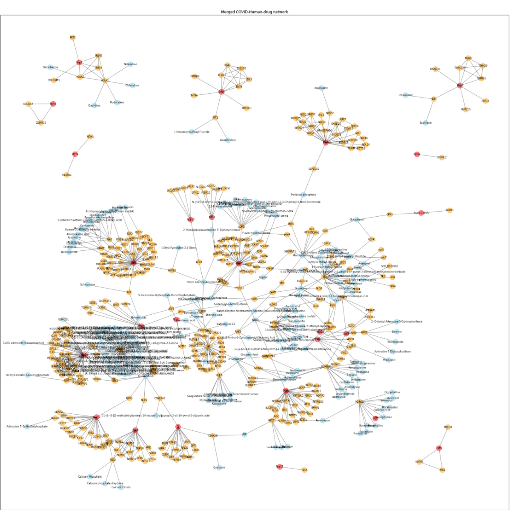
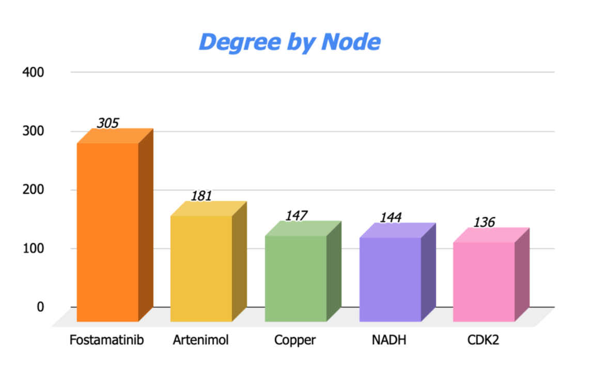
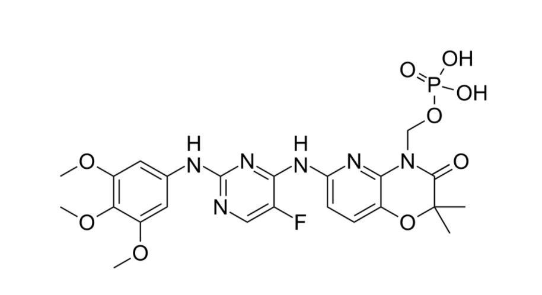
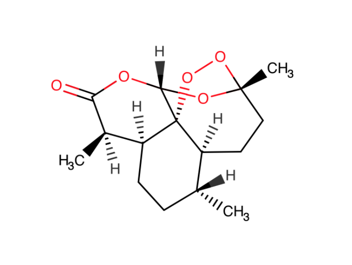
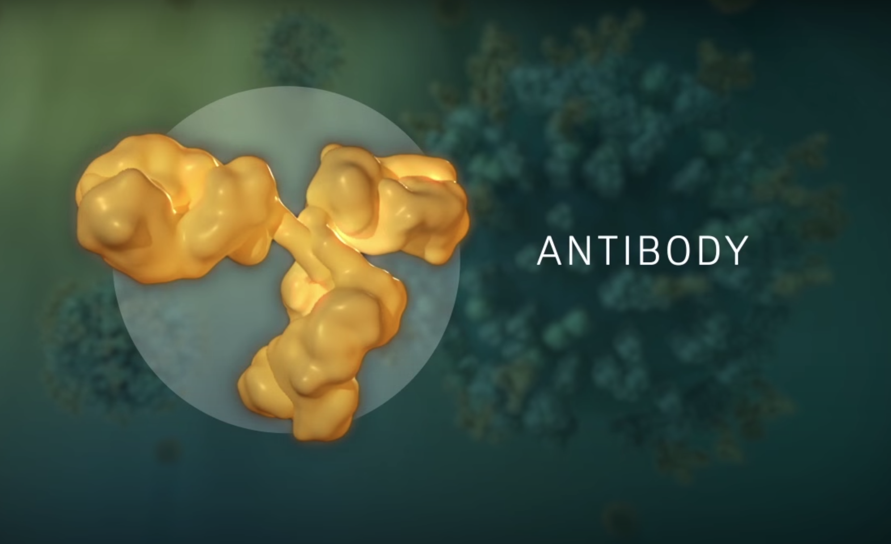

Basándonos en esta red combinada de los nodos que interaccionan solo con las proteínas humanas, las virales y los fármacos.

Al momento de calcular los nodos de fármacos que tienen mayor Degree, se puede apreciar mejor en esta gráfica de barras los 5 nodos de fármacos con mayor degree:

Por consiguiente nosotros tomamos en cuenta para una investigación más a fondo los primeros dos fármacos de esta gráfica, los cuales son, el Fostamatinib y Artenimol, para poder saber cómo es que interactúa con el covid-19 y poderles encontrar una relación.
Este es un medicamento que se aplica para tratar la trombocitopenia (número de plaquetas más bajo que lo normal) en adultos con trombocitopenia inmune crónica (immune thrombocytopenia, ITP; una condición que puede ocasionar moretones o sangrado inusual debido a una cantidad anormalmente baja de plaquetas en la sangre) que no fue tratada, además, con otro tratamiento. El fostamatinib pertenece a una clase de medicamentos conocidos como inhibidores de la quinasa. Funciona al reducir la destrucción de plaquetas (2).

En un estudio desarrollado recientemente en silico la “red Human-nCoV” y las posibles proteínas esparcidoras de COVID-19, se han derivado de las interacciones de la proteína Human-SARS-CoV utilizando el modelo SIS y el umbral difuso, valorándose en base a la diana de fármacos de la FDA. Después de esto, se realizó un análisis bidireccional para poder identificar los posibles objetivos farmacológicos de COVID-19.
En el primer análisis, se mostró la lista completa de medicamentos de la FDA para las 37 proteínas esparcidoras de nivel 1 y 4948 de nivel 2 en esta red. En el segundo análisis, se aplicó la misma estrategia de consenso, pero sobre un conjunto superpuesto curado de genes clave identificados a partir de los síntomas, los factores de riesgo y el resultado clínico del COVID-19.
La parte interesante se ve reflejada cuando en la estrategia de consenso que se aplicó en ambos análisis reveló que Fostamatinib, el cual también es un fármaco aprobado por la FDA, obtuvo la puntuación de consenso farmacológica más alta tanto en el nivel 1 como en el nivel 2.
Se creó un análisis adicional, y en este se reveló que Fostamatinib también se dirige a CYP3A4, una proteína esparcidora de nivel 2. Un estudio de acoplamiento posterior también revela que Fostamatinib también tiene la puntuación de acoplamiento más alta con respecto a 6LU7, la estructura cristalina de la proteasa principal COVID-19 en un complejo con un inhibidor N3, esto se hizo en comparación con otros fármacos potenciales como hidroxicloroquina, remdesivir, favipiravir y darunavir. Para el estudio computacional aplicado por Saha S et al. Se sugirió que Fostamatinib también puede considerarse como uno de los posibles candidatos para ensayos clínicos adicionales en la búsqueda de contrarrestar la propagación de COVID-19 (6).
En el segundo estudio investigado, el fostamatinib de Rigel Pharmaceuticals (NASDAQ: RIGL) se comenzó a evaluar en un estudio patrocinado por Raúl Rodriguez, un investigador para el tratamiento de la neumonía COVID-19.
Fostamatinib, el cual es un inhibidor oral de la tirosina quinasa del bazo (SYK), está aprobado para el tratamiento de la trombocitopenia inmunitaria crónica en adultos y está disponible comercialmente en los EE. UU. Con el nombre comercial TAVALISSE, esto llamó la atención del investigador y decidió probar una hipótesis que tenía desarrollando un experimento para su línea de investigación (5).
Los pacientes que fueron partícipes y voluntarios para esta investigación fueron asignados al azar para recibir fostamatinib, ruxolitinib o el tratamiento estándar de atención, que se administra dos veces al día durante 14 días. Todo esto con el objetivo principal de determinar la capacidad de fostamatinib y ruxolitinib para reducir la proporción de pacientes hospitalizados que progresan de una neumonía COVID-19 leve o moderada a grave, en comparación con la atención estándar.
“La neumonía grave por COVID-19 puede provocar el síndrome de dificultad respiratoria aguda, o SDRA, que a menudo puede ser fatal. Dados los datos alentadores de los modelos preclínicos de fostamatinib, creemos que existe la posibilidad de que la inhibición de SYK ayude a tratar la gravedad de la enfermedad en estos pacientes y a prevenir el SDRA ”, dijo Raúl Rodríguez, presidente y director ejecutivo de Rigel, en un comunicado.
"Al final se pueden ver las referencias de cada investigación para que puedan obtener un conocimiento más amplio, sobre este tema.
La artemisinina y sus derivados son un compuesto de lactona sesquiterpénica con una estructura química única derivada de la planta de ajenjo dulce, Artemisia annua L. Desde su descubrimiento por Youyou Tu y otros científicos chinos, la artenimisina, Arteméter y el artesunato se han convertido en los fármacos antipalúdicos más importantes y eficaces en los últimos 40 años, salvando millones de vidas alrededor del mundo.

La artemisinina es una sustancia impecable. Es especialmente interesante que las artemisininas posean fuertes efectos inhibitorios contra virus, protozoos, helmintos y hongos, y podrían inhibir infecciones, cáncer e inflamación.
Su descubrimiento ha abierto las fronteras para el estudio y tratamiento ya no solo de la malaria, sino también de otros problemas relacionados a la salud como la esquizofrenia, Falciparum, Plasmodium falciparum y en este caso, el COVID-19.
Varios informes demostraron la eficacia de los derivados de la artemisinina como potentes antivirales para el virus de la diarrea viral bovina (BVDV) para el tratamiento de neoplasias intraepiteliales de alto grado anal y cervical, virus del herpes humano 6 (HHV-6), virus de inmunodeficiencia humana (VIH) y más particularmente, artesunato, contra citomegalovirus humano (HCMV) (D'Alessandro et al., 2020). Esta potencia antiviral coloca a la clase de compuestos de artemisinina como candidatos prometedores para el tratamiento de pacientes que padecen el virus SARS-CoV-2 (7).
El artesunato, la artemisinina y el artenimol mostraron dos modos de interacciones con los puntos de unión de Lys353 y Lys31 de la proteína “Spike”. El análisis de dinámica molecular confirmó que los complejos formados pueden interactuar y permanecer estables en el sitio activo de sus respectivos objetivos. Dado que estas moléculas son antivirales eficaces con excelentes antecedentes de seguridad en humanos contra diversas dolencias, se ha recomendado su posible reutilización para el tratamiento de pacientes con SARS-CoV-2 después de estudios clínicos exitosos(8).
En respuesta a la pandemia, el Instituto de Investigación Aplicada de Madagascar produjo un tónico que contiene artemisia que supuestamente previene y trata el COVID-19. Fue lanzado por el presidente del país, Andry Rajoelina, a principios de mayo. El tónico se proporciona de forma gratuita a los escolares y a la sociedad en general en Madagascar. Se ha informado de que otros países africanos también están comprando miles de dosis.
Hasta ahora, no está claro si el medicamento es eficaz para prevenir o tratar el COVID-19, a pesar del uso generalizado del tónico. Esto en sí mismo es preocupante, pero también existe otro temor: que el uso generalizado de la droga podría terminar haciendo que los parásitos de la malaria sean más resistentes a ella (1).
Un estudio de 2005 realizado en China también encontró que los compuestos extraídos de cuatro hierbas, incluida la “Artemesia annua”, mostraron una actividad antiviral moderada en células de laboratorio contra el virus Sars original, que está estrechamente relacionado con el coronavirus actual.
Por lo tanto, no es sorprendente que se pueda considerar la artemisinina para el tratamiento de COVID-19. Sin embargo, hasta ahora no hay evidencia de que funcione.
El hecho de que no haya datos de prueba publicados sobre el uso de artemisinina para tratar COVID-19 no ha impedido que otros países compren el tónico de Madagascar. Los compradores incluyen países con algunas de las cargas de malaria más altas del mundo. Existe el temor de que un mayor uso del medicamento puede aumentar la resistencia a los antipalúdicos.
Vacuna contra el COVID-19: ¡Conoce los hechos!

Una vacuna para prevenir la enfermedad generada por el virus SARS-CoV-2 es quizá la mejor forma para acabar con la pandemia, sin embargo aún se están llevando a cabo estudios para la creación de una que cuente con todos los estándares de calidad e inocuidad.
Una vacuna no es lo mismo que un medicamento; mientras que una vacuna está diseñada para prevenir una enfermedad, un medicamento (que es un tipo de tratamiento) tiene como objetivo ayudar a manejar o curar una enfermedad.
A pesar de esto, tanto medicamentos como vacunas pasan por rigurosas pruebas para comprobar su seguridad y eficacia. Una vez son aprobadas por las autoridades sanitarias correspondientes, siguen siendo monitoreadas e investigadas para evitar cualquier reacción adversa a ellas.
Retos en la fabricación de tratamientos contra el coronavirus
Al igual que los tratamientos para las enfermedades de los diferentes Coronavirus anteriores, este nuevo virus presenta algunas complicaciones cuando se trata de desarrollo terapeútico:
1)Comprobar su seguridad: Por ejemplo, a pesar de que muchos fármacos han sido probados en animales y han garantizado su supervivencia, no previenen la enfermedad y en algunos casos causan complicaciones mayores como daño en los pulmones. Un fármaco contra el SARS-CoV-2 debe ser monitoreado arduamente para garantizar efectividad y seguridad antes de llegar al mercado.
2)Proporcionar protección a largo plazo: después de una primera infección por Coronavirus es poco probable que pueda haber una segunda infección del mismo virus, sin embargo puede pasar. Un tratamiento como son las vacunas deben garantizar máximamente protección por meses e incluso años.
3)Protección a los ancianos: los ancianos son población de riesgo principalmente por el deterioro sistémico que han sufrido a lo largo de los años, por lo tanto un fármaco no responde de igual forma en ellos que en jóvenes. En la elaboración de un fármaco debe supervisarse que todas las personas sin distinción de edad, género o raza puedan presentar complicaciones.